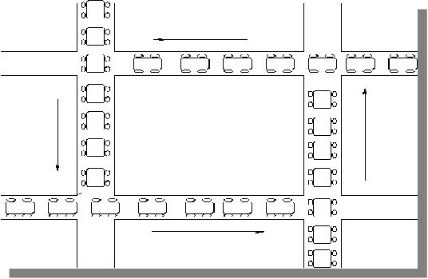
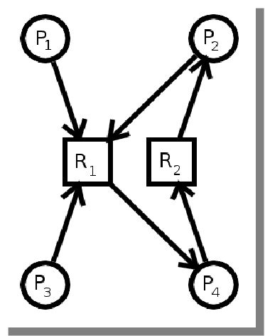
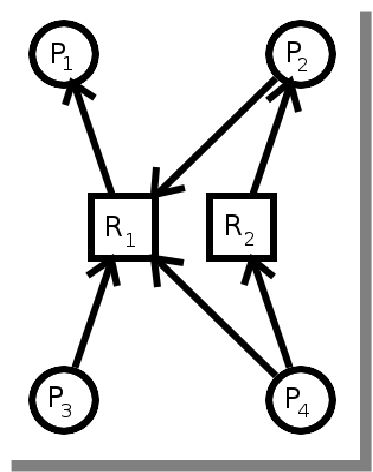

Overview
Recall this program from the "Threads" lectures:Single-threaded version:
#include <stdio.h> /* printf */
int Count = 0;
void Increment(void)
{
int i;
int loops = 1000 * 100;
for (i = 0; i < loops; i++)
Count++;
}
int main(void)
{
#define N 10
int i;
for (i = 0; i < N; i++)
Increment();
printf("Count = %i\n", Count);
return 0;
}
Multi-threaded version:Count = 1,000,000
#include <stdio.h> /* printf */
#include <pthread.h> /* thread create/join/exit */
int Count;
void *Increment(void *p)
{
int i;
int loops = 1000 * 100;
for (i = 0; i < loops; i++)
Count++;
return 0;
}
int main(void)
{
#define N 10
int i;
pthread_t thread_id[N];
for (i = 0; i < N; i++)
pthread_create(thread_id + i, 0, Increment, 0);
for (i = 0; i < N; i++)
pthread_join(thread_id[i], 0);
printf("Count = %i\n", Count);
return 0;
}
Single-threaded Multi-threaded
Summarizing:
Critical Sections
Here is the test program (with the black-box functions for locking and unlocking):
#include <stdio.h> /* printf */
#include <pthread.h> /* thread create/join/exit */
int Count = 0;
void *Increment(void *p)
{
int i, id = *(int *)p;
for (i = 0; i < 1000 * 1000 * 100; i++)
{
Lock0(id); /* Acquire the critical section */
Count++; /* This is the critical section */
Unlock0(id); /* Release the critical section */
}
return NULL;
}
int main(void)
{
pthread_t thread_id[2];
int tid0 = 0, tid1 = 1;
pthread_create(&thread_id[0], 0, Increment, &tid0);
pthread_create(&thread_id[1], 0, Increment, &tid1);
pthread_join(thread_id[0], 0);
pthread_join(thread_id[1], 0);
printf("Count = %i\n", Count);
return 0;
}
Bad Good Lock0(id); /* Acquire the critical section */ for (i = 0; i < 1000 * 1000 * 100; i++) { Count++; /* This is the critical section */ } Unlock0(id); /* Release the critical section */for (i = 0; i < 1000 * 1000 * 100; i++) { Lock0(id); /* Acquire the critical section */ Count++; /* This is the critical section */ Unlock0(id); /* Release the critical section */ }
And these are a few different Lock and Unlock functions to look at:
void Lock0(int me)
{
}
void Unlock0(int me)
{
}
Q. Why is this solution unacceptable?Count = 117,004,575 real 0m1.061s user 0m2.060s sys 0m0.000s
A. Obviously, no mutual exclusion. Both threads can be modifying Count.
int lock = 0; /* global lock variable */
void Lock1(int me)
{
while (lock == 1) /* spin wait (busy waiting) */
continue;
/* both threads can be here */
lock = 1;
}
void Unlock1(int me)
{
lock = 0;
}
Q. Why is this solution unacceptable?Count = 164,908,686 real 0m1.602s user 0m3.130s sys 0m0.000s
A. Again, no mutual exclusion on lock so both threads can see a value of 0 and skip the while loop.
int turn = 0;
void Lock2(int me)
{
while (turn != me) /* busy wait */
continue;
}
void Unlock2(int me)
{
turn = 1 - me; /* other thread */
}
Q. Why is this solution unacceptable? (The output is correct and is always correct with this example.)Count = 200,000,000 real 0m7.523s user 0m14.980s sys 0m0.010s
A. It relies on the fact that the second thread will take a turn and then set the flag back to the first thread. What if the second thread is doing something else (or has terminated)? The first thread waits and waits until the (unready) second thread does something else. The second thread may never want the lock again. It's a violation of property #2 above: No progress is made: A thread wants to enter the critical section, but can't.
int ready[2] = {0, 0};
void Lock3(int me)
{
int you = 1 - me;
ready[me] = 1;
/* both threads can be here */
while (ready[you]) /* busy wait */
continue;
}
void Unlock3(int me)
{
ready[me] = 0;
}
Q. Why is this solution unacceptable?No output, it hangs. (after about 1000 iterations)
A. It's easy to tell from the output that no progress is made. Both threads are able to set their ready flag to true causing an infinite while loop.
In thread 0, you is 1 and ready[0] is 1.
In thread 1, you is 0 and ready[1] is 1.
The while loop hangs in both threads.
int ready[2] = {0, 0};
int turn = 0;
void Lock4(int me)
{
int you = 1 - me; /* #1 */
turn = you; /* #2 */
ready[me] = 1; /* #3 */
/* #4 */
while (ready[you] && (turn == you))
continue; /* only one thread can be here */
}
void Unlock4(int me)
{
ready[me] = 0;
}
Notes:Count = 199,999,192 real 0m18.366s user 0m36.380s sys 0m0.040s
| Thread 0 | Thread 1 |
|---|---|
| you: 1 ready[0]: 1 |
you: 0 ready[1]: 1 |
Thread 0 Thread 1 Stores A: X = 1 C: Y = 1 Loads B: R1 = Y D: R2 = X
Loads (memory reads) may be reordered with older stores (memory writes) to different locations
void Lock5(int me)
{
int you = 1 - me;
turn = you;
ready[me] = 1;
__sync_synchronize();
while (ready[you] && (turn == you))
continue;
}
void Unlock5(int me)
{
ready[me] = 0;
}
According to the GCC documentation:Count = 200,000,000 real 0m20.981s user 0m41.660s sys 0m0.020s
And the x86 specification says something like this:In most cases, these builtins are considered a full barrier. That is, no memory operand will be moved across the operation, either forward or backward. Further, instructions will be issued as necessary to prevent the processor from speculating loads across the operation and from queuing stores after the operation.
Loads and stores are not reordered with locked instructions.A closer look:
The line in blue is the only difference between the two functions. (32-bit asm)
Time comparison:
Peterson's Solution (no sync) Peterson's Solution (w/sync)
It is interesting to note that the code without the synchronization appears to run about 50% slower. (This was under Linux in a virtual machine.)
Peterson's Solution (no sync) Peterson's Solution (with sync)
This solution works, but not all systems used to implement the synchronization. (Most modern systems/compilers today will implement this or something similar. so it's unlikely to be a problem these days.)
Running Lock4 (Peterson's solution) on my old Digipen computer (2 cores running Windows XP with Cygwin):
Running Lock5 (Peterson's solution w/synch) on my Digipen computer under Cygwin with a version of gcc (4.3.2) which doesn't support the synchronization function:
GCC version 4.4.0 or later does support this synchronization.Count = 199,999,976 real 30.90 user 61.76 sys 0.01Summary: (All tests run under Linux on olga, which supports the synchronization function, GCC 4.4.3.)
0 - No locking 1 - Lock variable 2 - Alternate turns 3 - Yield to other 4 - Peterson's Solution 5 - Peterson's Solution w/synch
Summary: (All tests run under Linux on maya, in a Windows 7 virtual machine with GCC version 4.5.3 .)
0 - No locking 1 - Lock variable 2 - Alternate turns 3 - Yield to other 4 - Peterson's Solution 5 - Peterson's Solution w/synch
Summary: (All tests run under Linux on maya, which supports the synchronization function, GCC 4.6.3.)Code to demonstrate the above output.
0 - No locking 1 - Lock variable 2 - Alternate turns 3 - Yield to other 4 - Peterson's Solution 5 - Peterson's Solution w/synch
Fortunately, there are better ways to provide synchronization.
Synchronization Primitives
Suppose we had atomic functions called TestAndSetTestAndSet and SwapSwap that worked with a global variable (locked). This is how we could use them: (Assume locked is initialized to 0)
- All of the attempts above at synchronization were software-based solutions. (We were trying to do it in our code.)
- Not all software-based solutions are guaranteed to work on modern architectures.
- On a single-core system we could solve the critical section problem by disabling interrupts (context switches) while a shared resource was being accessed.
- Hardware provides special instructions that work atomicallyatomically.
This means that the instruction cannot be preempted; it will finish completely. - Remember, even i++ is not atomic, but requires multiple steps to complete:
movl i(%rip), %eax ; fetch i from memory into register addl $1, %eax ; add 1 to the register movl %eax, i(%rip) ; put value back into memoryThe atomic TestAndSet function provides mutual exclusion.
Client code Library function (atomic) void fn(void) { do { while (TestAndSet(&locked)) continue; /* critical section */ locked = 0; } while (1); }int TestAndSet(int *locked) { int oldval = *locked; *locked = 1; return oldval; }The atomic Swap function also provides mutual exclusion:
Client code Library function (atomic) void fn2(void) { do { int key = 1; while (key == 1) Swap(&locked, &key); /* critical section */ locked = 0; } while (1); }void Swap(int *a, int *b) { int temp = *a; *a = *b; *b = temp; }
- The real functions are atomic and only one thread/process can enter them at a time.
- They are guaranteed to finish executing the entire function before another thread/process can execute it.
- This means that the thread that is executing these functions will not be preempted while it is executing.
Fortunately, we have these capabilities in a library using the PthreadsPthreads API.
The library (pthread.h) is quite extensive (about 75 functions) but we will only be looking at a very small portion of it.
Mutexes
The first synchronization mechanism we're going to look at is the mutex.If two events are mutually exclusivemutually exclusive it means that only one or the other can happen, but not both. A mutex provides for mutual exclusionmutual exclusion between threads/processes.
A POSIX example using a global mutex: (modified from above)
Note:/* mutex.c */ /* to build on Linux, link with the pthread library: */ /* gcc mutex.c -lpthread */ #include <stdio.h> /* printf */ #include <pthread.h> /* thread stuff */ int Count = 0; pthread_mutex_t count_mutex; /* NEW */ void *Increment(void *p) { int i; for (i = 0; i < 1000 * 100; i++) { pthread _mutex_lock(&count_mutex); /* NEW */ Count++; pthread _mutex_unlock(&count_mutex); /* NEW */ } return 0; } int main(void) { #define N 10 int i; pthread_t thread_id[N]; pthread_mutex_init(&count_mutex, NULL); /* NEW */ for (i = 0; i < N; i++) pthread_create(&thread_id[i], 0, Increment, 0); for (i = 0; i < N; i++) pthread_join(thread_id[i], 0); pthread_mutex_destroy(&count_mutex); /* NEW */ printf("------------------\n"); printf("Count = %i\n", Count); return 0; }You can also use a default static initializer for the mutex (instead of the call to pthread_mutex_init):
instead of this function call in main:pthread_mutex_t count_mutex = PTHREAD_MUTEX_INITIALIZER;pthread_mutex_init(&count_mutex, NULL);
Here's a possible definition of pthread_mutex_t:Output with 10 threads:typedef struct { int __m_reserved; int __m_count; _pthread_descr __m_owner; int __m_kind; struct _pthread_fastlock __m_lock; } pthread_mutex_t;
No synchronization Using a mutex Output with 50 threads:
No synchronization Using a mutex Output with 100 threads:
No synchronization Using a mutex Factor out the mutex into a function without parameters (global mutex):
Factor out the mutex into a function using parameters (non-global mutex):
Client code Functions for Lock/Unlock void *Increment(void *p) { int i; for (i = 0; i < 1000 * 100; i++) { Lock(); Count++; Unlock(); } return 0; }void Lock(void) { pthread_mutex_lock(&count_mutex); } void Unlock(void) { pthread_mutex_unlock(&count_mutex); }
Client code Functions for Lock/Unlock void *Increment(void *p) { int i; for (i = 0; i < 1000 * 100; i++) { Lock(&count_mutex); Count++; Unlock(&count_mutex); } return 0; }void Lock(pthread_mutex_t *mutex) { pthread_mutex_lock(mutex); } void Unlock(pthread_mutex_t *mutex) { pthread_mutex_unlock(mutex); }Note: Of course, in "normal, production code" you would check the return values of the system calls to ensure that they actually succeeded. Otherwise, you could spend unecessary time debugging your application.
A Win32 example that passes the mutex via a parameter to the thread function:Parameters to CreateThread:/* wmutex.c */ #include <windows.h> #include <stdio.h> struct ThreadParams { HANDLE mutex; int tid; }; DWORD WINAPI ThreadFn(LPVOID p) { DWORD result; int done = FALSE; struct ThreadParams *params = (struct ThreadParams *)p; HANDLE mutex = params->mutex; int tid = params->tid; while(!done) { /******************************************************************** DO NOT set the timeout to zero, unless your threads have some other work to do. If the thread can do nothing until it obtains the mutex, then don't keep checking that it is available. Use INFINITE instead of O (zero) for the timeout. If you use 0, and don't obtain the mutex immediately (the likely outcome) your program will be wasting CPU cycles in a kind of busy wait loop. This is just an example of how you would be able to do other work, if necessary. If you don't understand the above, use INFINITE and forget about it. *********************************************************************/ result = WaitForSingleObject(mutex, 0L); switch (result) { /* Acquired the mutex */ case WAIT_OBJECT_0: printf("ThreadId %i: acquired mutex\n", tid); done = TRUE; /* Pretend to do some work */ printf("ThreadId %i: working...\n", tid); Sleep(1000); if (!ReleaseMutex(mutex)) printf("Error releasing mutex: %i\n", GetLastError()); printf("ThreadId %i: released mutex\n", tid); break; /* The mutex wasn't available yet */ case WAIT_TIMEOUT: /*printf("ThreadId %d: no mutex yet\n", tid);*/ break; } } return TRUE; } int main(int argc, char **argv) { int i; HANDLE *threads; struct ThreadParams* params; DWORD ThreadID; HANDLE mutex; int num_threads = 4; /* The user can specify the number of threads */ if (argc > 1) num_threads = atoi(argv[1]); /* Allocate memory for threads and parameters */ threads = malloc(num_threads * sizeof(HANDLE)); params = malloc(num_threads * sizeof(struct ThreadParams)); /* Create mutex */ mutex = CreateMutex(NULL, FALSE, NULL); if (mutex == NULL) { printf("Error creating mutex: %d\n", GetLastError()); return 1; } /* Create the threads */ for(i = 0; i < num_threads; i++) { params[i].mutex = mutex; params[i].tid = i; threads[i] = CreateThread(NULL, 0, ThreadFn, ¶ms[i], 0, &ThreadID); if(threads[i] == NULL) { printf("Error creating thread: %d\n", GetLastError()); return 1; } } /* Wait for each thread */ WaitForMultipleObjects(num_threads, threads, TRUE, INFINITE); /* Release thread handles */ for(i = 0; i < num_threads; i++) CloseHandle(threads[i]); /* Release mutex */ CloseHandle(mutex); /* Clean up memory */ free(threads); free(params); return 0; }Final note:HANDLE WINAPI CreateThread ( __in_opt LPSECURITY_ATTRIBUTES lpThreadAttributes, __in SIZE_T dwStackSize, __in LPTHREAD_START_ROUTINE lpStartAddress, __in_opt LPVOID lpParameter, __in DWORD dwCreationFlags, __out_opt LPDWORD lpThreadId );
- If multiple threads/processes are waiting (queued) on a mutex, it is indeterminate which thread/process will acquire it. In other words, it's not first-come-first-serve, it's random. (Well, at least from the user's perspective.)
Semaphores
The second synchronization mechanism we're going to look at is the semaphoresemaphore.A semaphore is an integer that can only be accessed using atomic operations.
- The names of the functions vary (e.g. up/down, lock/unlock, wait/post, wait/signal, acquire/release)
- lock - Waits until the value of the semaphore is greater than zero, then decrements the value and returns.
- unlock - Increments the value and returns.
- Depending on the values that the semaphore can take on:
- Binary semaphore - can be 0 or 1 (similar to a mutex)
- Counting semaphore - can be 0 up to any positive value
- Allows more than one process/thread to simultaneously access shared resources.
- There is generally more than one instance of the shared resource.
- The usage is much like other synchronization techniques:
acquire(semaphore); /* decrement value (may block) */ /* critical section */ release(semaphore); /* increment value and return (won't block) */A POSIX example:
This program allows the user to specify how many threads to create and how many to allow to run at any one time. For CPU-bound threads, you would want as many threads as CPU cores. For I/O-bound threads, you could launch many more (most would be in the blocked/waiting state). Output (program is called sem):/* sem.c */ /* to build on Linux, link with the pthread library: */ /* gcc sem.c -lpthread */ #include <stdio.h> /* printf */ #include <fcntl.h> /* O_CREAT, O_RDWR */ #include <stdlib.h> /* malloc, free, atoi */ #include <pthread.h> /* thread stuff */ #include <semaphore.h> /* semaphore stuff */ #include <unistd.h> /* sleep */ struct ThreadParams { sem_t *semaphore; int tid; }; void *ThreadFn(void *p) { struct ThreadParams *params = (struct ThreadParams *)p; sem_t *semaphore = params->semaphore; int tid = params->tid; /* Acquire semaphore */ sem_wait(semaphore); printf("ThreadId %i: acquired semaphore\n", tid); /* Pretend to do some work */ printf("ThreadId %i: working...\n", tid); sleep(1); /* Release semaphore */ sem_post(semaphore); printf("ThreadId %i: released semaphore\n", tid); return 0; } int main(int argc, char **argv) { int i; pthread_t *threads; struct ThreadParams* params; sem_t *semaphore; const char *sem_name = "/barney"; /* see online docs about naming: sem overview */ int num_threads = 12; int sem_count = 4; /* The user can specify the number of threads and max semaphore count */ if (argc > 1) num_threads = atoi(argv[1]); if (argc > 2) sem_count = atoi(argv[2]); /* Allocate memory for threads and parameters */ threads = malloc(num_threads * sizeof(pthread_t *)); params = malloc(num_threads * sizeof(struct ThreadParams)); /* Create semaphore, see online docs for details */ semaphore = sem_open(sem_name, O_CREAT, O_RDWR, sem_count); if (semaphore == SEM_FAILED) { printf("sem_open failed\n"); return 1; } /* Mark the semaphore for deletion (will delete it even if we crash) */ sem_unlink(sem_name); /* Create the threads */ for(i = 0; i < num_threads; i++) { params[i].semaphore = semaphore; params[i].tid = i; pthread_create(&threads[i], NULL, ThreadFn, ¶ms[i]); } /* Wait for each thread */ for (i = 0; i < num_threads; i++) pthread_join(threads[i], NULL); /* Done with the semaphore */ sem_close(semaphore); /* Clean up memory */ free(threads); free(params); return 0; }Notes:
sem 4 1 sem 8 3 sem 12 4 sem 12 8
- If you look closely at the second run above, you'll see that it appears incorrect.
- At one point, there are 4 threads in the critical section!
- How can that be?
- How do we "fix" the problem?
- See also: sem_trywait and sem_timedwait for more control.
The same example using the Win32 API:
Output (program is called sem.exe) The numbers in parentheses in the second column are the number of threads in the critical section./* wsemp.c */ #include <windows.h> #include <stdio.h> struct ThreadParams { HANDLE semaphore; int tid; }; DWORD WINAPI ThreadFn(LPVOID p) { DWORD result; int done = FALSE; struct ThreadParams *params = (struct ThreadParams *)p; HANDLE semaphore = params->semaphore; int tid = params->tid; while(!done) { /******************************************************************** DO NOT set the timeout to zero, unless your threads have some other work to do. If the thread can do nothing until it obtains the mutex, then don't keep checking that it is available. Use INFINITE instead of O (zero) for the timeout. If you use 0, and don't obtain the mutex immediately (the likely outcome) your program will be wasting CPU cycles in a kind of busy wait loop. This is just an example of how you would be able to do other work, if necessary. If you don't understand the above, use INFINITE and forget about it. *********************************************************************/ result = WaitForSingleObject(semaphore, 0L); switch (result) { /* Acquired the semaphore */ case WAIT_OBJECT_0: printf("ThreadId %i: acquired semaphore\n", tid); done = TRUE; /* Pretend to do some work */ printf("ThreadId %i: working...\n", tid); Sleep(1000); if (!ReleaseSemaphore(semaphore, 1, NULL)) printf("ReleaseSemaphore error: %i\n", GetLastError()); printf("ThreadId %i: released semaphore\n", tid); break; /* The semaphore wasn't available yet */ case WAIT_TIMEOUT: /*printf("ThreadId %d: no semaphore yet\n", GetCurrentThreadId());*/ break; } } return TRUE; } int main(int argc, char **argv) { int i; HANDLE *threads; struct ThreadParams* params; DWORD ThreadID; HANDLE semaphore; int num_threads = 12; int sem_count = 4; /* The user can specify the number of threads and max semaphore count */ if (argc > 1) num_threads = atoi(argv[1]); if (argc > 2) sem_count = atoi(argv[2]); /* Allocate memory for threads and parameters */ threads = malloc(num_threads * sizeof(HANDLE)); params = malloc(num_threads * sizeof(struct ThreadParams)); /* Create semaphore */ semaphore = CreateSemaphore(NULL, sem_count, sem_count, NULL); if (semaphore == NULL) { printf("CreateSemaphore error: %d\n", GetLastError()); return 1; } /* Create the threads */ for(i = 0; i < num_threads; i++) { params[i].semaphore = semaphore; params[i].tid = i; threads[i] = CreateThread(NULL, 0, ThreadFn, ¶ms[i], 0, &ThreadID); if(threads[i] == NULL) { printf("CreateThread error: %d\n", GetLastError()); return 1; } } /* Wait for each thread */ WaitForMultipleObjects(num_threads, threads, TRUE, INFINITE); /* Release thread handles */ for(i = 0; i < num_threads; i++) CloseHandle(threads[i]); /* Release semaphore */ CloseHandle(semaphore); /* Clean up memory */ free(threads); free(params); return 0; }A simpler Win32 thread function:
sem.exe 4 1 sem.exe 8 3 sem.exe 12 4 sem.exe 12 8 /* wsemp2.c */ DWORD WINAPI ThreadFn(LPVOID p) { struct ThreadParams *params = (struct ThreadParams *)p; HANDLE semaphore = params->semaphore; int tid = params->tid; WaitForSingleObject(semaphore, INFINITE); printf("ThreadId %i: acquired semaphore\n", tid); /* Pretend to do some work */ printf("ThreadId %i: working...\n", tid); Sleep(1000); ReleaseSemaphore(semaphore, 1, NULL); printf("ThreadId %i: released semaphore\n", tid); return TRUE; }Critical Sections (Windows-only)
The third synchronization mechanism we're going to look at is the Critical Section. This is specific to Windows.A Win32 Example using a Critical Section. (Follow the links below for more details).
/* wcritical.c */ #include <windows.h> #include <stdio.h> struct ThreadParams { CRITICAL_SECTION *critical_section; int tid; }; DWORD WINAPI ThreadFn(LPVOID p) { struct ThreadParams *params = (struct ThreadParams *)p; CRITICAL_SECTION *critical_section = params->critical_section; int tid = params->tid; EnterCriticalSection(critical_section); /* Pretend to do some work */ printf("ThreadId %i: working...\n", tid); Sleep(1000); LeaveCriticalSection(critical_section); return TRUE; } int main(int argc, char **argv) { int i; HANDLE *threads; struct ThreadParams* params; DWORD ThreadID; CRITICAL_SECTION critical_section; int num_threads = 4; /* The user can specify the number of threads */ if (argc > 1) num_threads = atoi(argv[1]); /* Allocate memory for threads and parameters */ threads = malloc(num_threads * sizeof(HANDLE)); params = malloc(num_threads * sizeof(struct ThreadParams)); /* Setup critical section */ InitializeCriticalSection(&critical_section); /* Create the threads */ for(i = 0; i < num_threads; i++) { params[i].critical_section = &critical_section; params[i].tid = i; threads[i] = CreateThread(NULL, 0, ThreadFn, ¶ms[i], 0, &ThreadID); if(threads[i] == NULL) { printf("Error creating thread: %d\n", GetLastError()); return 1; } } /* Wait for each thread */ WaitForMultipleObjects(num_threads, threads, TRUE, INFINITE); /* Release thread handles */ for(i = 0; i < num_threads; i++) CloseHandle(threads[i]); /* Release critical section */ DeleteCriticalSection(&critical_section); /* Clean up memory */ free(threads); free(params); return 0; }
Synchronization Summary:
- A mutex generally protects a single resource, may require help from the kernel (system call overhead) and can be used between threads/processes.
- A semaphore can protect mulitple instances of the same resource, requires help from the kernel (system call overhead) and can be used between threads/processes.
The problem with file locks and semaphores is that they always require a system call for the lock and unlock operations, and each system call has a small, but appreciable, cost. By contrast, mutexes are implemented using atomic machine-language operations (performed on memory locations visible to all threads) and require system calls only in the case of lock contention.
(From here: The Linux Programming Interface, section 30.1.3, page 638)- A mutex implies ownership as only the thread the locked the mutex can unlock it.
- No thread owns a semaphore and any thread can increment (unlock) the semaphore that was decremented (locked) by another thread.
- This flexibility can lead to poorly structured synchronization designs, so you've got to be careful do this.
- Mutexes may be prefered because the ownership property enforces good code structure.
- The submission server (pontus) uses semaphores to limit the number of submissions to the number of cores (for fairness).
- A mutex and a binary semaphore can both be used for the same thing and their performance is similar.
- Mutexes may be preferable to semaphores because they may require less overhead.
- Semaphores may be preferable to mutexes because they are async-signal safe. (They can be called within a signal handler)
- In Windows, a critical section (CRITICAL_SECTION) is like a mutex, but it doesn't require as much kernel help (fewer context switches so it's faster), but can only be used between threads in the same process. (It can't be used for inter-process synchronization.)
Mutex (wmutex2.c) Critical Section (wcritical2.c) DWORD WINAPI ThreadFn(LPVOID p) { int i; struct ThreadParams *params = (struct ThreadParams *)p; HANDLE mutex = params->mutex; for (i = 0; i < 1000 * 1000; i++) { WaitForSingleObject(mutex, INFINITE); Count++; ReleaseMutex(mutex); } return TRUE; }Output using 10 threads:Value of Count is 10000000 real 27.23 user 0.01 sys 0.01DWORD WINAPI ThreadFn(LPVOID p) { int i; struct ThreadParams *params = (struct ThreadParams *)p; CRITICAL_SECTION *critical_section = params->critical_section; for (i = 0; i < 1000 * 1000; i++) { EnterCriticalSection(critical_section); Count++; LeaveCriticalSection(critical_section); } return TRUE; }Output using 10 threads:Value of Count is 10000000 real 14.05 user 0.01 sys 0.00Notes:Using a mutex between processes (Win32 example): This code is the parent process and this code is for the child processes. This example also shows how to create shared memory between processes.
- At first glance, it seems that busy-waiting is a waste of CPU cycles.
- It depends on how long the thread expects to wait to enter the critical section.
- Spinning a long time can prevent other threads from running (spinning is CPU-bound).
- Blocking will let other threads run.
- Swapping out a thread's stack and registers takes time. (Context switching, re-scheduling)
- Could also affect the thread's cache. (Thread may move between cores, invalidating the cached data.)
- Some APIs allow the program to set the spin count.
- Spinning only makes sense on multi-core systems because a single-core system will not let other threads (that hold the lock) run while spinning.
Spin lock (busy-waiting, CPU-bound) Blocked (likely I/O-bound) void Lock5(int me) { int you = 1 - me; turn = you; ready[me] = 1; __sync_synchronize(); while (ready[you] && (turn == you)) continue; } Lock5(id); Critical section... Unlock5(id);Final note:
- The Win32 API provides InitializeCriticalSectionAndSpinCount that allows the programmer to select how many times to spin before blocking. Just change this:
to this:InitializeCriticalSection(&critical_section);You may need to experiment with the proper spin count.InitializeCriticalSectionAndSpinCount(&critical_section, 2000);Comparisons:
My rough experimenting showed a spin count of 2000 provided these numbers.
InitializeCriticalSection InitializeCriticalSectionAndSpinCount According to MSDN:
Useless trivia: The function name InitializeCriticalSectionAndSpinCount isn't anywhere near close to the longest WinAPI name: RtlWriteDecodedUcsDataIntoSmartLBlobUcsWritingContext or the .NET function GetTextEffectCharacterIndexFromTextSourceCharacterIndex More fun here.You can improve performance significantly by choosing a small spin count for a critical section of short duration. For example, the heap manager uses a spin count of roughly 4,000 for its per-heap critical sections.
- If multiple threads/processes are trying to acquire a semaphore, it is indeterminate which thread/process will acquire it. In other words, it's not first-come-first-serve, it's random. (Well, at least from the user's perspective.)
Deadlock
The synchronization techniques still require the programmer to use them correctly. Even when used "correctly", bad things can happen:
P0 P1 lock(res1); lock(res2); lock(res2); lock(res1); /* use resources */ unlock(res1); unlock(res2); unlock(res2); unlock(res1);Can you see the problem? The two processes are deadlockeddeadlocked.
The deadlock depends on how the resources are acquired:
P0 P1 lock(res1); ------- lock(res2); ------- use resources blocked (try to lock res2) use resources blocked use resources blocked use resources blocked unlock(res1); blocked unlock(res2); blocked ------- lock(res2); ------- lock(res1); ------- use resources ------- use resources ------- use resources ------- use resources ------- unlock(res2); ------- unlock(res1); ------- ------- ------- -------There is no deadlock above. However, this will cause deadlock:
P0 P1 lock(res1); lock(res2); blocked (try to lock res2) blocked (try to lock res1) blocked (forever) blocked (forever) DEADLOCKOther problems:
- Starvation - wait on resource forever. This problem is similar to the problems with some scheduling algorithms (e.g. pre-emptive SJF)
- Priority inversionPriority inversion - a high-priority task is waiting on a low-priority task to release.
- This is a summary of what happened to the Mars Pathfinder project.
- The processes on the spacecraft used shared memory, message queues, and pipes to communicate.
- If the data collection processes didn't finish by the time the scheduler ran, the system was reset (rebooted because it considered this a hard error).
- The amount of data on Mars was far too much to collect in the time slices allotted. (Way more than they ever thought possible.)
- The data collection processes were lower priority than system processes (scheduling, communications), but they locked resources needed by higher priority processes.
- Priority inheritance - Lower priority tasks get the priority of the highest-priority blocked task that is waiting on the same resource.
- Microsoft Windows gives random priority boosts to lower priority tasks holding a resource. (Allows them to finish executing the (short) critical section.)
Deadlock occurs when several processes are waiting for an event that can be caused by the other waiting processes.
 There are 4 conditions that must hold for there to be a deadlock:
- Mutual exclusion - resources can only be held (used) by one process at a time, and must be released in order for others to use them.
- Hold and wait - A process must be holding a resource and waiting for another resource that is held by another process.
- No preemption - processes can only voluntarily release a held resource.
- Circular waiting - process P0 is waiting for process P1 to release a resource, P1 is waiting for P2, ... , Pn is waiting for P0
Looking back at this deadlock we see all 4 conditions:
P0 P1 lock(res1); lock(res2); blocked (try to lock res2) blocked (try to lock res1) blocked (forever) blocked (forever) DEADLOCKThere is no deadlock here: (no process is holding/waiting at the same time)
P0 P1 lock(res1); ------- lock(res2); ------- use resources blocked (try to lock res2) use resources blocked use resources blocked use resources blocked unlock(res1); blocked unlock(res2); blocked ------- lock(res2); ------- lock(res1); ------- use resources ------- use resources ------- use resources ------- use resources ------- unlock(res2); ------- unlock(res1); ------- ------- ------- -------Resource allocation graphs
There are 3 methods for dealing with deadlocks:
- Two types of vertices
- Processes: one vertex for each process (represented by a circle)
- Resources: one vertex for each resource (represented by a square)
- A directed edge (arrow) can connect a process and a resource
- Request edge: (process) → (resource)
- Used when a process requests a resource
- Assignment edge: (resource) → (process)
- Used when a resource is assigned to a process
- A cycle is a path where the starting and ending vertex are the same.
- If there is NO cycle in the (directed) graph, there is no deadlock.
- If there IS a cycle in the (directed) graph, there is a deadlock.
- Where is the deadlock below?
Deadlock No deadlock  
- Deadlock prevention
- Prevent hold and wait
- Ensure that a process cannot request a resource if it already holds one. (Get all at once or none.)
- Ensure that all processes request resources in the same order.
- Deadlock detection (and recovery)
- Detect a deadlock
- Maintain a resource allocation graph and look for cycles
- Recover from the deadlock
- Terminate all deadlocked processes, or
- Terminate one deadlocked process at a time until the deadlock cycle is removed
- Do nothing
- Ignore the problem and just pretend that deadlocks never occur. (Easiest solution!)
Which one do you think is used by most operating systems?
C99 and the atomic_int Type
C11 added a new type called atomic_int that can do some operations atomically, such as increment:#include <stdatomic.h> /* atomic_int */ atomic_int i = 0; ... i++; /* This is now an atomic operation. */Example (from before now using an atomic_int):Results:#include <stdio.h> /* printf */ #include <pthread.h> /* thread create/join/exit */ #include <stdatomic.h> /* atomic_int */ atomic_int Count = 0; /* This is the only change. */ void *Increment(void *p) { int i, id = *(int *)p; for (i = 0; i < 1000 * 1000 * 100; i++) { Count++; /* This is the critical section */ } return NULL; } int main(void) { pthread_t thread_id[2]; int tid0 = 0, tid1 = 1; pthread_create(&thread_id[0], 0, Increment, &tid0); pthread_create(&thread_id[1], 0, Increment, &tid1); pthread_join(thread_id[0], 0); pthread_join(thread_id[1], 0); printf("Count = %i\n", Count); return 0; }
atomic_int int